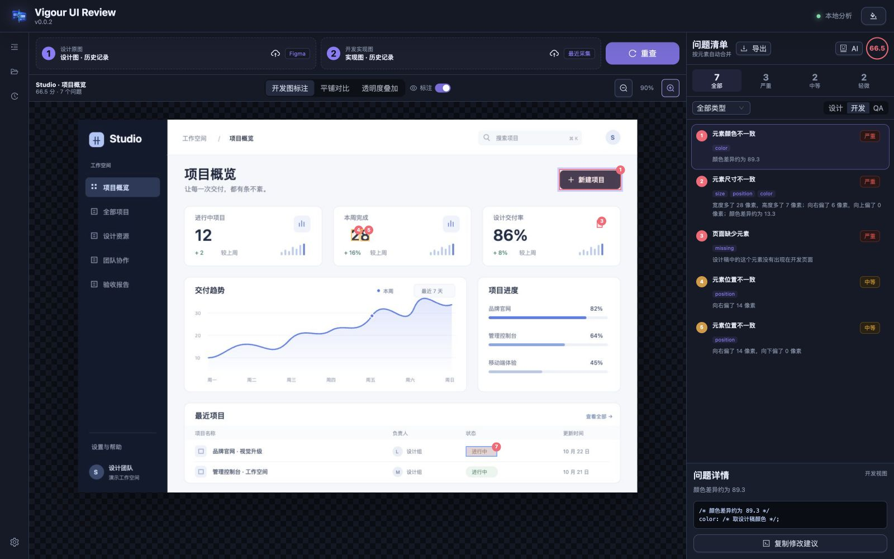
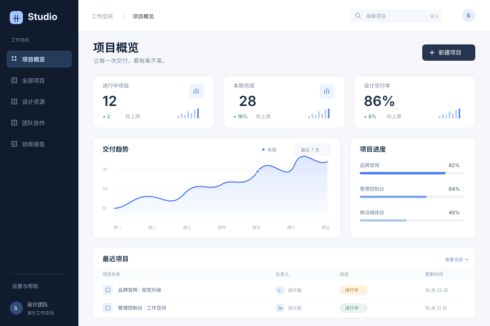
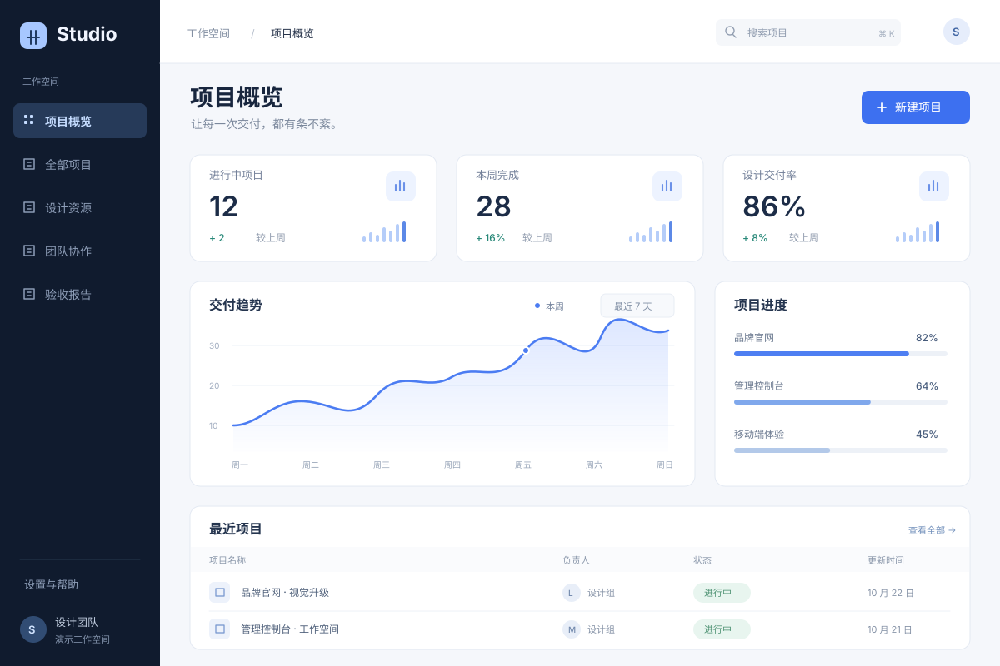
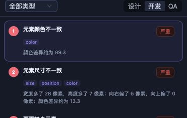

三种视图，灵活对比
在标注、平铺和叠加视图中核对设计还原。



留意按钮颜色、数字位置与缺失图标。图片为合成示例。
在标注、平铺和叠加视图中核对设计还原。
查看位置、尺寸、颜色、缺失与多余元素的问题清单。
支持 PNG、Markdown、JSON，保留项目与验收历史。
导入图片或 Figma 设计稿，用 Chrome 扩展采集网页。

运行本地分析，结合标注与问题清单核对差异。
导出标注图片或报告，交给团队修正与复核。
选择处理器与系统，下载对应的程序与扩展。
应用 / 扩展 0.0.2 · 各平台使用独立 Beta 构建M 系列芯片 · 最低目标 macOS 14
安装器与配套扩展需分别下载。
下载 M 系列版 下载配套 Chrome 扩展Intel 处理器 · 最低目标 macOS 14
新增 Intel 预览版，不含本地 OCR。
下载 Intel 核心版已含配套 Chrome 扩展
x64 架构 · 目标 Windows 11
更新整页采集、配对与报告，待真机复测。
下载 Windows 测试包已含配套 Chrome 扩展
均未签名，macOS 未公证，扩展未上架商店。Windows 11 复测、Intel Mac 真机及 Mac 干净机 / 最低系统验收待完成；安装被拦截时请停止并反馈。
分别下载并解压 M 系列安装器与 beta.1 配套扩展。
打开 chrome://extensions，开启开发者模式，加载 chrome-extension 文件夹并复制 ID。
运行 Setup，填入实际扩展 ID，再从 Chrome 扩展打开工作台。
确认“关于本机”显示 Intel，完整解压核心版，保留 intel-stage 文件夹。
在 chrome://extensions 开启开发者模式，加载包内 chrome-extension，复制扩展 ID。
运行包内 Setup 并填写扩展 ID，打开工作台后使用“像素 + 结构分析”；此包不含 OCR。
完整解压 Windows beta.2 包，保留其中的安装器与扩展。
打开 chrome://extensions，开启开发者模式，加载包内 chrome-extension 文件夹并复制 ID。
运行 Setup，填入实际扩展 ID，再从 Chrome 扩展打开工作台。
请停用旧扩展，使用同平台、同次构建的配套文件；不要仅凭界面中的 0.0.2 判断是否匹配。